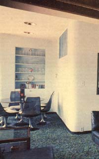
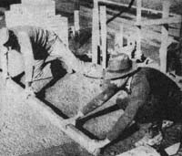
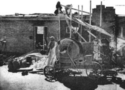
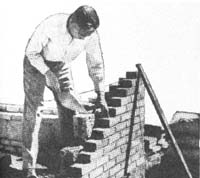
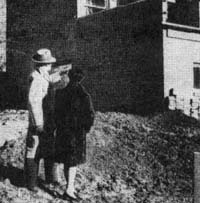
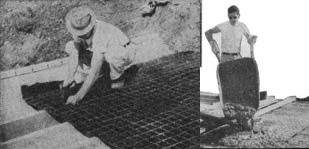
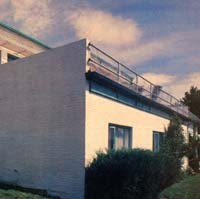
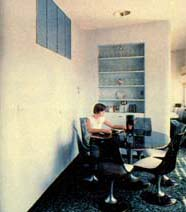

He Built A Home Of Sawdust/Concrete
An article reprinted from Popular Mechanics, and an update on how that house has held up, thirty years later.
by O. A. Fitzgerald
January/February 1978
Thirty years ago-just after World War II, when so many exciting human-scale things were still being done in so many fields-a fellow out in Idaho built a house of sawdust and concrete. And Popular Mechanics, among other publications, reported on the construction of that house. Good for Popular Mechanics.
The only trouble is ... we've been waiting ever since for a follow-up report that would tell us how well this unusual building has stood the test of time. And-since it doesn't seem that anyone else is interested in doing that followup-MOTHER has tackled the project.
Here, then, is the original PM story from 30 years ago ... and MOTHER's update on Wait Friberg's sawdust/concrate home, as it looks and performs today.
Reprinted by permission from POPULAR MECHANICS, copyright© 1948 by H.H. Windsor.
Anyone experiencing a revival of the old desire to use sawdust and shavings in place of sand and gravel to get a lighter and cheaper concrete should get acquainted with the tiny diatom-nature's wonder plant-and how Walt Friberg used it to cut costs in his new home at Moscow, Idaho.
Walls, floors, and roof of the house are made of this sawdust-and-shavings concrete. By teaming up wood waste and diatomaceous earth, every cubic inch of which contains millions of nature's microscopic wonder plants, Friberg cut in two the cost of these parts of his house and got superior insulation.
When he returned to the Agricultural Engineering faculty of the University of Idaho, Friberg, a veteran of the Army Engineers, found himself house-hunting.
He saw sawdust and shavings being burned as waste by mills in his locality. Building a house out of wood waste was an old, old dream, he realized. Most engineers long ago gave up hope of getting a satisfactory wood-waste concrete. When the mix was lean, to take advantage of the cheap wood waste, the resulting concrete was not strong and would burn almost as rapidly as wood. When the mix was rich enough to be fireproof, the extra cement used wiped out much of the savings over sand and gravel and also destroyed much of the insulating value of the wood.
But during the war Friberg had learned something about the diatom that gave him courage to reopen the old question. Diatomaceous earth was used in industry as an insulator and fireproofer. He had seen how the magic material, added to the concrete mix in building giant reclamation dams in California, had greatly increased its workability. Perhaps diatomaceous earth would solve the sawdust-concrete problem. That hunch paid off and the diatom is in the building spotlight today.
Deposits of the diatom are widely distributed in the United States. Some of the largest deposits are in Oregon, California, Nevada, and Washington. Because of its strategic value during the war there was an intensive search for new deposits. Many were found. While most of the new ones are too small or not of sufficient purity for manufacturing use, they are suitable for sawdust-and-shavings concrete.
In grandfather's day the diatom was just an interesting little plant to look at through a microscope. School-teachers impressed their pupils with the wonders of nature by holding up a small pinch of diatomaceous earth and telling them it contained thousands upon thousands of tiny shells.
Within the last decade, however, the diatom has vaulted to a top place in industry. It is used in toothpaste, silver polish, and nail polish, in purifying filters in sugar factories, as insulators in high-tension motors and electrical equipment, and as fillers in paint. Diatomaceous earth has over a hundred industrial uses, mostly in the chemical, food, and pharmaceutical fields.
Friberg found that when a small part of the cement was replaced by some diatomaceous earth and a little common clay added, a lowcost, high-insulating, fire-resistant, lightweight concrete resulted. The cost, about half that of regular concrete, varies with localities, depending on the availability of wood waste and the distance from a deposit of diatomaceous earth.
Friberg's concrete cannot carry heavy loads. But since one inch of it has the insulating value of 12 to 14 inches of ordinary concrete, it is excellent for floors and walls where high insulation is desired and the load can be carried by a veneer of bricks or boards. Sawdust-concrete can be sawed, drilled, and nailed just like wood, and is amazingly fire-resistant. Here is the mix he used: one part of cement, one part of diatomaceous earth, three parts of sawdust, three parts of shavings, and one part of clay ... all volume measurements. Since sawdust-concrete has a higher absorption rate than straight concrete, Friberg added one part of clay to the mix.
First the clay is put into the concrete mixer. If it is lumpy, the clay should be soaked overnight before use. Next the diatomite is dumped in, then the cement. After these have been thoroughly mixed, the sawdust and shavings are added.
In his house, Friberg used mill-run sawdust that had aged about a year. In his experimenting, he found that new sawdust is not desirable. Neither is sawdust that has stood so long it is white. One year's aging, he says, is about right. With the shavings, age is not important. He used them green, aged a year, and older. They all worked well.
A mixture of pine, larch, and fir sawdust and shavings was used in the house. Being run-of-the-mill, there was bark in the waste. Friberg found no objections to this, but he did discover that cedar and hardwood waste are not satisfactory.
No special equipment is necessary to put the diatom to work in home building. Friberg cast blocks and bricks in commercial precasting machinery. He also cast small and large slabs using simple forms like those used in building adobe houses. Because the concrete is so light, he poured the floors and roof of his house in one slab.
To test the sawdust-concrete, Friberg cast slabs 32 by 48 inches square and one inch thick. Close to the edge of these slabs he drove eight-penny nails and drilled rows of holes with a power drill. There was no splitting. Then he sawed off strips an inch wide with a power saw. With a power sander he produced a smooth surface that could be painted. He tested the slab for insulating value and found it equal to a foot or more of concrete.
Friberg believes that a 3-5/8 by 32 by 48-inch slab, which can be precast and cured during spare time, will be useful in farm buildings. This size will span two studs or floor joists or can be sawed to fit between studs. Northwest farmers already are showing interest in its use for dairy barns and poultry houses, where the need is great for a low-cost material that has high insulating value.
Someday a method of waterproofing the concrete may be found. Until then Friberg recommends that it be used indoors only. It has another limitation also. With a load strength only one-quarter to one-third that of ordinary concrete, it can't be used in sidewalks or driveways or for floors and walls that carry heavy loads.
But even if these limitations are never completely overcome, Friberg sees a tremendous field for the tiny diatom and the sawdust and shavings piles. His living room floor, for example, is a solid block of the low-cost material. Carpet and linoleum are fastened directly to it. The roof also is a solid block, covered with roofing paper and pulverized pumice stone. In the walls of his house the main load is carried by a layer of regular concrete bricks. Double-thickness sawdust-concrete bricks provide the insulation.
Since diatomaceous earth deposits were investigated during the war, state departments of geology and schools of mines have information on their locations. So, if the prospective builder can locate a convenient pile of pine, larch, or fir sawdust and shavings, and it isn't too far from a deposit of diatomaceous earth, Friberg has found a way for him to bring them together to produce a new type of low-cost building material. a
THE FRIBERG HOUSE 30 YEARS LATER
Recently, MOTHER staffers Martin Fox and Travis Brock trekked to Moscow, Idaho to locate the wood-fiber/diatomite/concrete home that Popular Mechanics reported on 30 years ago (see preceding story). Our intrepid staffers wanted to find out: Was the original building still standing? Had the concrete mixture settled, cracked, or disintegrated? How had the structure weathered thirty years of cold Idaho winters?
The answers to these questions-Martin and Travis quickly learned-were "yes", "no", and "very nicely, thank you".
It turns out that a couple by the name of Ray and Barbara Harrison bought the unusual sawdust-concrete house from the home's innovative builder-Wait Friberg-23 years ago. Ray and his wife-who've raised seven children in the distinctive dwelling-claim that the house has stood them in good stead over the years. The basic structure (as you can see in the photos on the opposite page) is still sound and has shown no signs of deterioration.
As for those "cold Idaho winters", Ray Harrison says that-thanks in part to the excellent insulating properties of the sawdust-concrete walls-his family's heating bills generally run $30 to $40 a month less than those of their neighbors who live in similar-sized homes of conventional construction. Ray is quick to add, however, that at least some of those heat savings can be attributed to the "passive" solar heat design features that Walt Friberg incorporated into the house.
The northern side of the building, for example, is built back into a slope, and large windows cover a great deal of the home's south side. What's more, directly above the southern-facing windows is a series of aluminum reflectors that angle even more of the winter sun's energy into the dwelling than would normally filter in. (Those same reflectors shade the windows somewhat and help keep out unwanted heat during the summer.) At night, the Harrisons; "shut" solar heat in the building by pulling heavily insulated drapes into place behind the southfacing windows.
If you've followed the story this far, you may be wondering [1] whether any other structures have ever been built using the "wood-fiber and diatomite" concrete developed by Walter Friberg, and [2] what ever happened to that clever Friberg fellow anyway. Well, Walt has-over the years-built or helped build some 30 or 40 sawdust-concrete buildings in the northern Idaho/eastern Washington area ... and he is still working with the material. Walt says he feels that from the materials-cost and energy-cost standpoints, his unusual concrete mix is even more attractive today than it was 30 years ago.
|
 Workmen say that the sawdustmix concrete handles much easier than the normal mix. Here they smooth out another one-piece slab on the roof |
 Weighing only a third as much as the ordinary concrete, the sawdust mix can be easily pushed right up the ramp |
 Double-thickness blocks are laid inside the brick siding. The brick supports main load of the building. The interior wall will be given a plaster coat later |
|
 The Fribergs looking out over the rear of their new sawdust and concrete home. It was designed to conform to the natural slope of the hill |
 Some blocks were cemented in pairs providing for full wall thickness |
 Reinforced wire mesh is nailed on joists before the floor is poured. Below: The sawdust-concrete mix, although textured, spreads easily. Here, the workmen cover reinforced wire mesh with a thick coat of the mixture to form up the solid floor slab |
|
 |
 |
 |